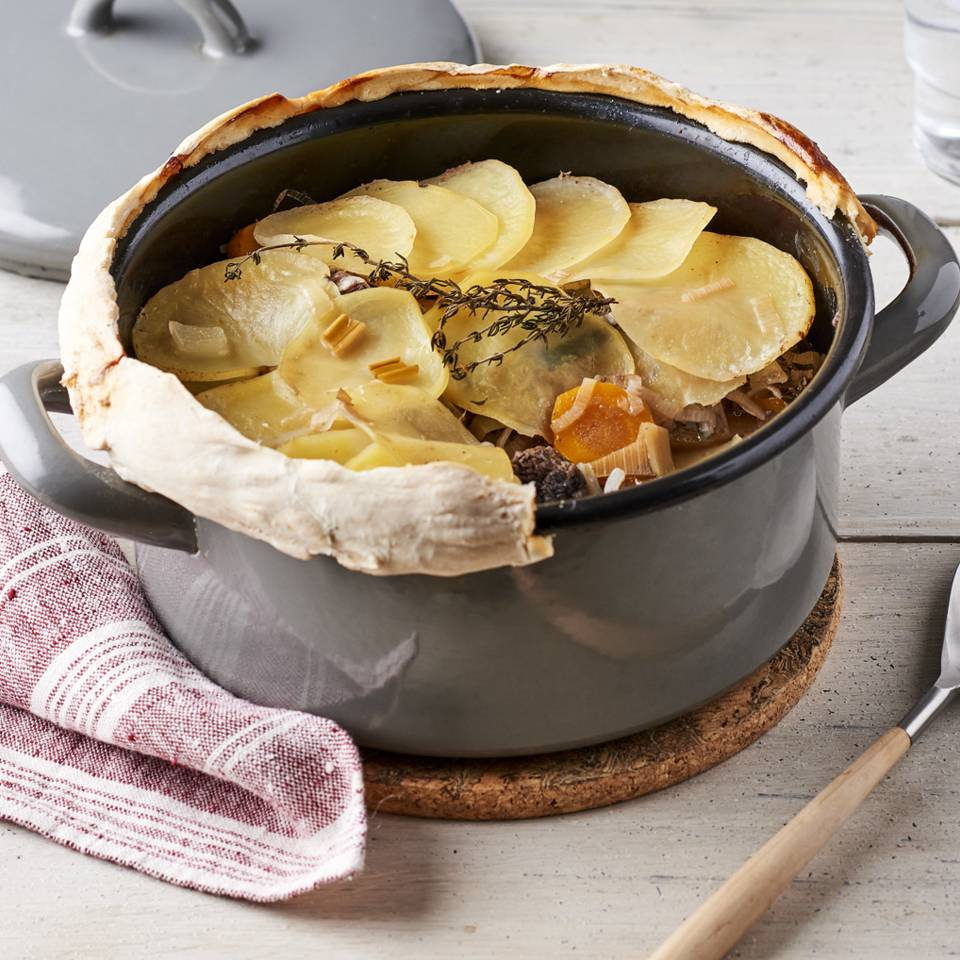
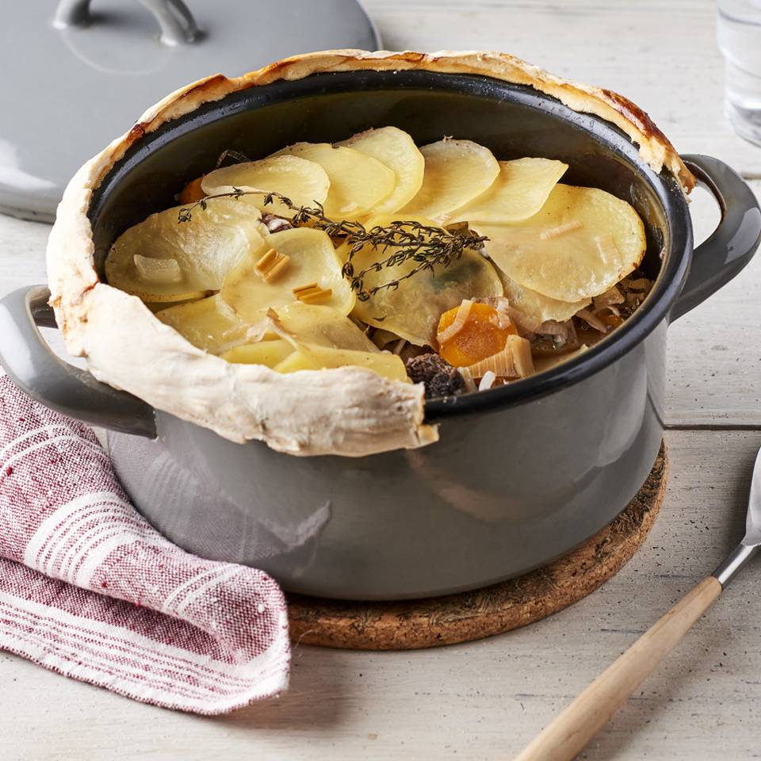
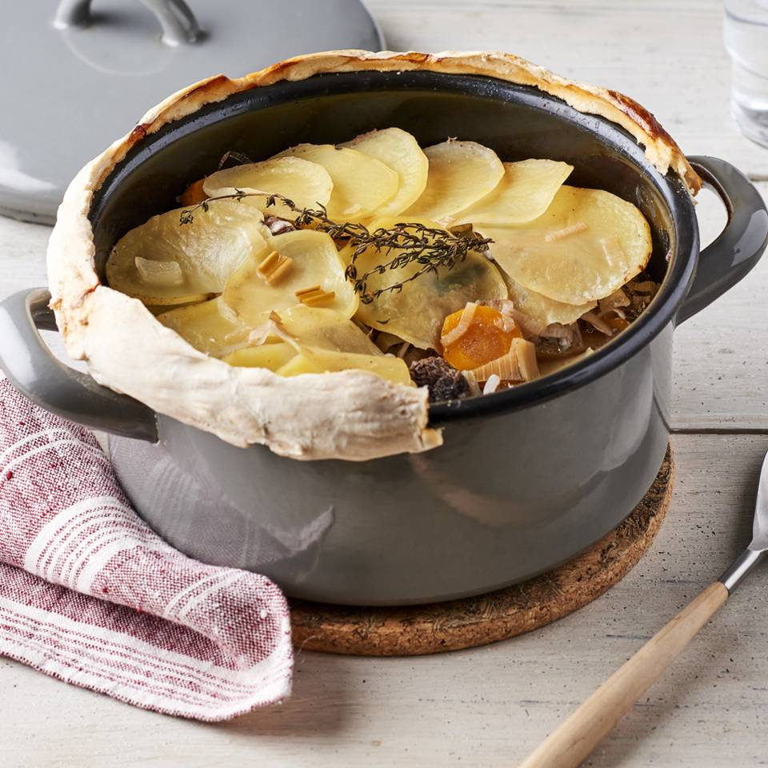
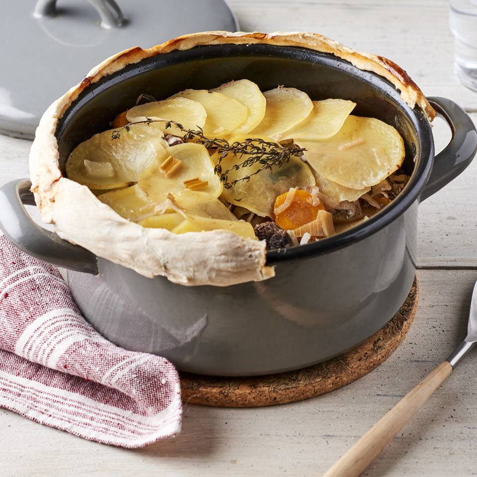

Baeckeoffe
 



Le baeckeoffe (de l’alsacien Beckeoffe, littéralement « four à pain »), est un plat traditionnel emblématique de la
cuisine alsacienne, à base de pommes de terre, de légumes, et d'assortiment de viandes d'agneau, de bœuf et de porc,
mariné. Le tout est mijoté à l'étouffée sur plus de 24 heures dans une terrine, avec des épices, et du vin blanc du
vignoble d'Alsace.